Optics
광학 기술
ATI는 자체 광학 설계 역량을 바탕으로 반도체 및 PCB 공정에 최적화된 검사 환경을 구현합니다.
The leading company for revolutionary vision machines
Established in 1996 in Incheon, South Korea, Advanced Technology Inc. (ATI) has spent three decades at the forefront of precision engineering.
Introducing ATI
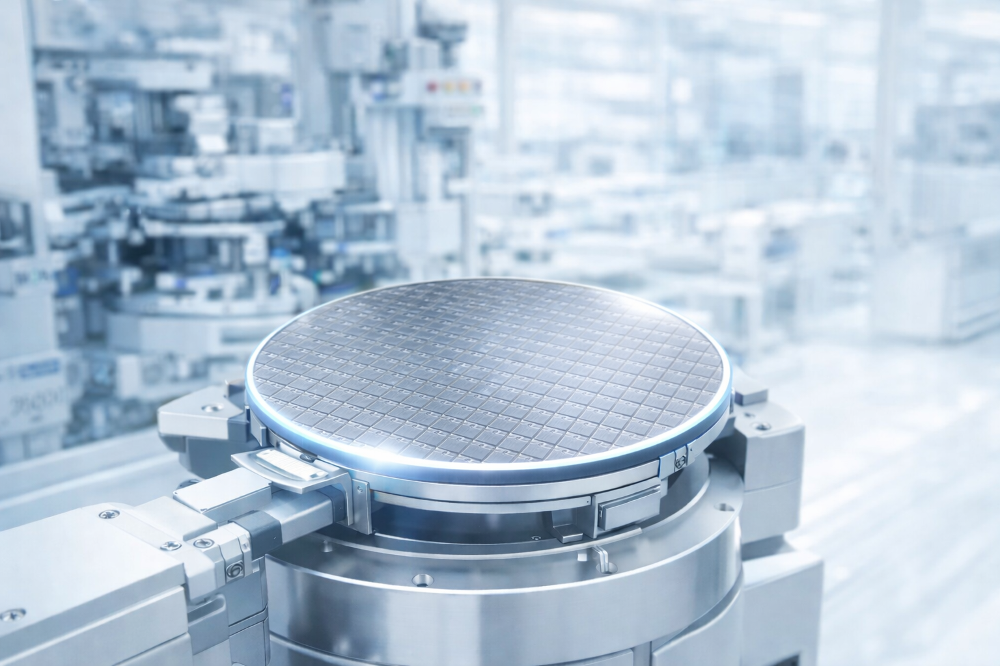
Established in 1996 in Incheon, South Korea, Advanced Technology Inc. (ATI) has spent three decades at the forefront of precision engineering. While our journey began with pioneering PCB inspection, we have evolved into a specialized powerhouse in the semiconductor industry, delivering world-class inspection systems for wafers and reticles, alongside high-speed laser marking and biotech automation solutions.
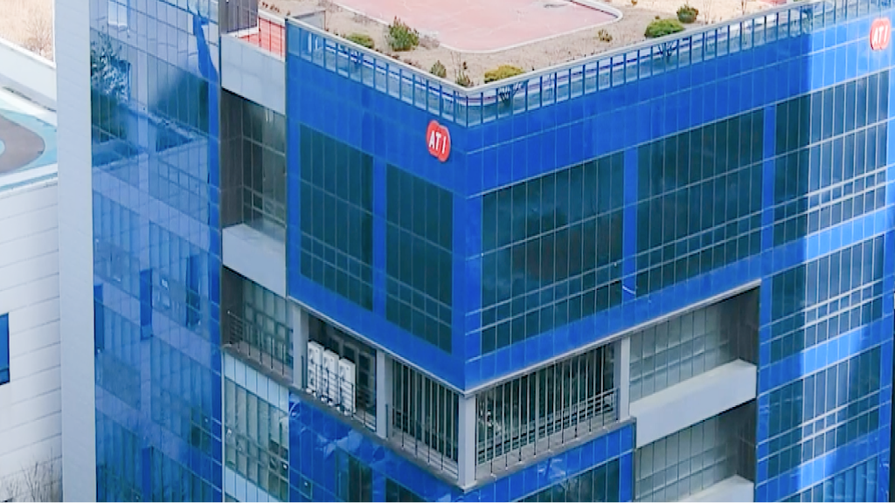
ATI provides comprehensive process solutions across the semiconductor and PCB value chain, specializing in inspection, metrology, and automation. Our in-house development of core technologies—optics, software & AI, automation, inspection, and metrology—ensures unmatched accuracy and seamless integration into the world's most advanced production lines. We serve customers globally with a strong presence in the United States, Japan, China, Vietnam, Taiwan, Singapore, Malaysia, and India.
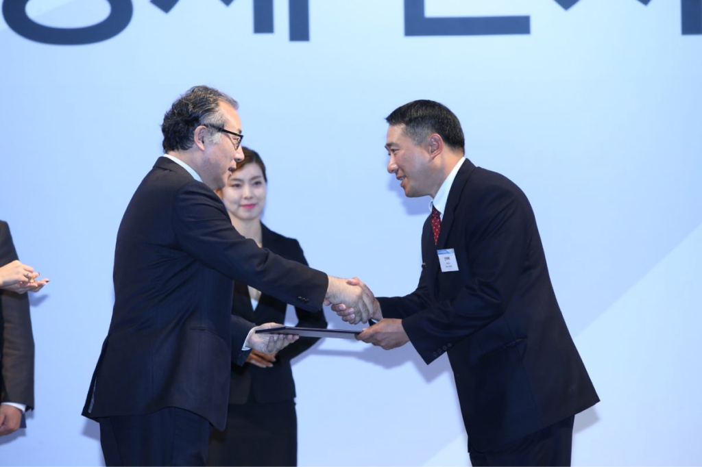
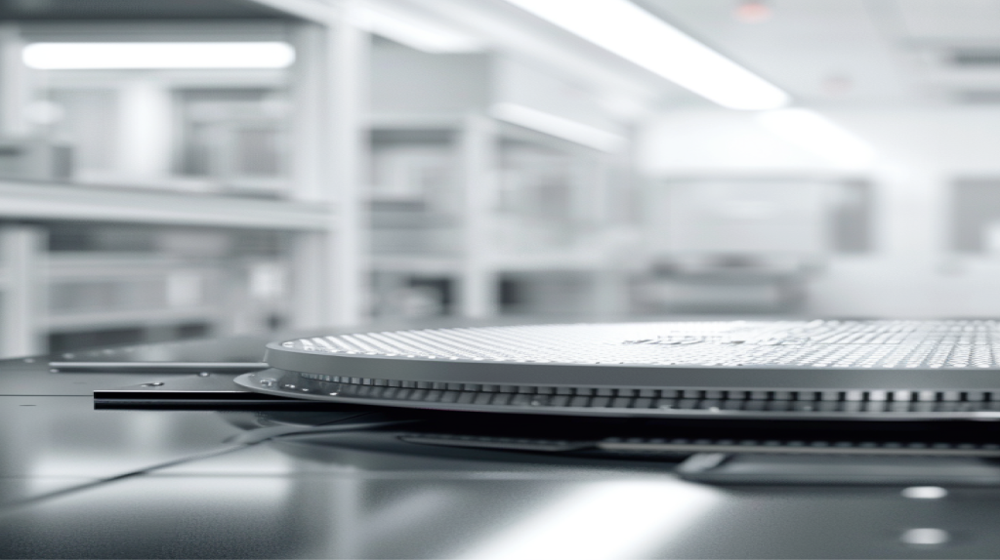
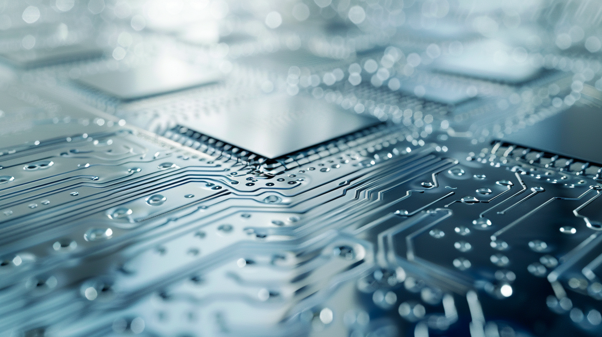
Our Capabilities
ATI's integrated capabilities span the semiconductor and PCB value chain, from wafer and reticle inspection to advanced package and PCB solutions, supported by a global service network.
Mission and Vision
Our foundation is built upon five pillars of excellence — Optics, Software & AI, Automation, Inspection, and Metrology — which allow us to maintain a decisive technical advantage in the global market. Unlike others, ATI develops all core technologies in-house. This complete control over our hardware and AI-driven software ensures that our semiconductor solutions offer unmatched accuracy and seamless integration into the world's most advanced production lines.
We understand that the semiconductor landscape demands both extreme precision and adaptability. ATI distinguishes itself through a commitment to customization, engineering flexible systems tailored to the specific technical requirements of our partners. Supported by a robust global network, we provide rapid technical service across the United States, Japan, China, Vietnam, Taiwan, Singapore, Malaysia, and India. At ATI, we don't just supply equipment; we provide the technological foundation for the next generation of semiconductor innovation.
ATI는 자체 광학 설계 역량을 바탕으로 반도체 및 PCB 공정에 최적화된 검사 환경을 구현합니다.
검사·계측 전 공정을 자동화하여 사람의 개입을 최소화하고 일관된 품질을 보장합니다.
나노 단위의 정밀 계측으로 공정 편차를 제어하고 수율 향상을 지원합니다.
AI 기반 영상 분석과 자체 개발 소프트웨어로 검사 정확도와 처리 속도를 동시에 끌어올립니다.
웨이퍼부터 패키지까지 미세 결함을 정밀하게 검출하는 고해상도 검사 기술을 제공합니다.
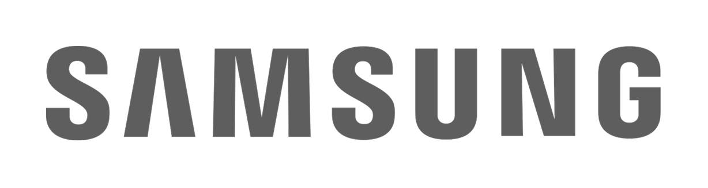

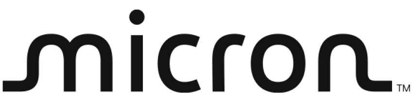
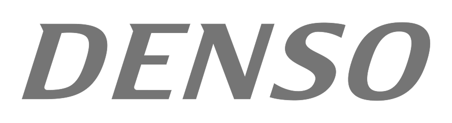
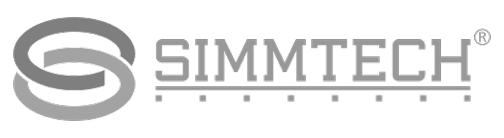
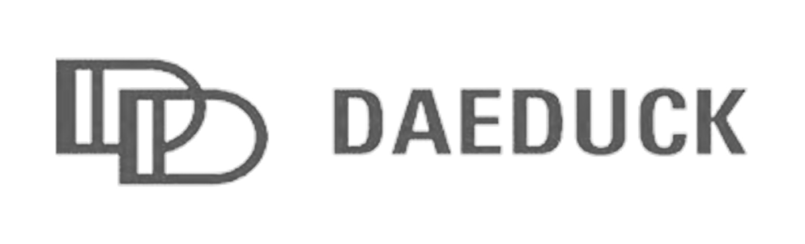
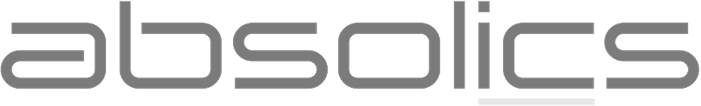
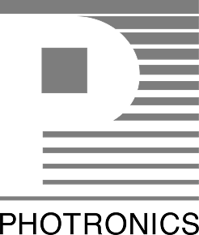
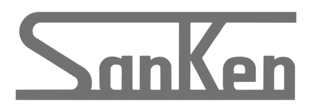
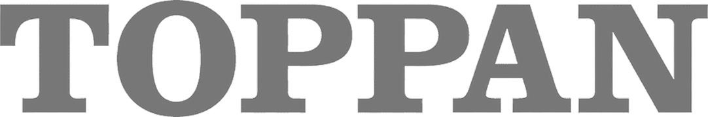
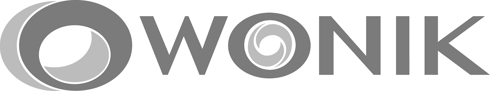
Try, Think, Fight, Funthese four principles guide how we work. We encourage bold attempts, deep thinking, persistent effort, and a culture where innovation is enjoyable. This mindset has driven over 2,000 installations worldwide and continues to shape our product development and customer partnerships.
Vision
We aim to be the trusted partner for precision inspection and metrology across the semiconductor and PCB industries. By combining in-house optics, AI-powered software, automation, inspection, and metrology, we deliver solutions that meet the most demanding technical requirements and help our customers achieve higher yield and faster time-to-market.
Our core technology pillars—Optic, Automation, Inspection, Metrology, and Software & AI—form an integrated system that delivers precision and reliability across every solution we offer.
ATI Founded · First PCB inspection equipment launched
Selected as an export-promising SME · Venture company registration
Corporate research institute established
Developed PCB inspection (AVIS-1800 series)
Developed semiconductor inspection (WIS-1000) · Selected as INNO-BIZ (technology innovation SME)
Developed LED inspection (AVIS-5000) · Acquired ISO 9001/14001 certification
Exhibited at JPCA 2008 and COPHEX 2008 · Started industry-academia joint research with Inha University · Selected as Incheon Star Company
Incheon Science and Technology Grand Prize · Acquired NET (New Excellent Technology) certification
Developed BIO LAB AUTOMATION · IR52 Jang Young-sil Award · Developed WIND
Selected as a "Good Company to Work For" by the Ministry of Knowledge Economy
Developed reticle inspection (SUN)
Established ATI America, ATI China, ATI Japan, ATI Vietnam · Developed PCB laser marking system (LMS series) · Presidential commendation for commercialization of new technology · Selected as Incheon City designated Vision Company
500 million dollar export tower award · Selected as leading company by SBC · Presidential commendation for venture contribution (CEO) 2015
10 million dollar export tower award
Merit award for industry-academia cooperation technology development (SMB Administration) · Established ATI Singapore, ATI Taiwan
Youth-friendly small but strong company · Selected as one of top 100 small but strong companies for materials, parts, and equipment · Korea Standards Association management system certification
Citation for job creation and professional talent nurturing · Developed EUV reticle inspection (VEGA)
Developed wafer inspection (WIND2-F/B/P series) · Certified as national representative innovative company by Minister of SMEs and Startups · Developed reticle inspection (SUN2) · Developed reticle optical density measuring system (TRITON) · Developed PCB color inspection (PINE2-S)
Selected as youth-friendly small but strong company by Ministry of Employment and Labor (excellent in wages, work-life balance, employment stability)
Developed FC-BGA inspection & sorting system (JEDI2) · Iron Tower Order of Industrial Service Merit (technology localization, regional economic revitalization) · Minister of Trade, Industry and Energy commendation for national quality innovation (product quality) 2024
ATI India established
—
Celebrating 30 years of innovation since 1996, ATI (Advanced Technology Inc.) has evolved into a global leader in metrology and inspection solutions for the semiconductor and PCB industries. Driven by core principles of "Try, Think, Fight, and Fun," the company has achieved over 2,000 installations globally while advancing AI-driven technology for the future.
More ViewATI is committed to sustainable growth and responsible business practices. Our ESG framework guides how we operate, innovate, and contribute to our communities and the environment.
ATI maintains the following international management system certifications:
Consistent quality in design, manufacturing, and service delivery.
Expiry: June 11, 2028. Supports environmental responsibility and compliance in our operations.
Expiry: June 5, 2026. Promotes safe working conditions and worker well-being.
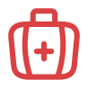
Expiry: February 27, 2027. Applicable to relevant product and process controls.